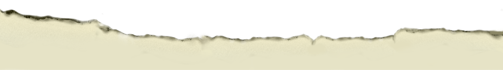

ЛЭТИ. 140 лет истории.
Добро пожаловать!
Первому Электротехническому уже не первая сотня лет!
Через что прошел университет, его
студенты и сотрудники за эти годы? Какие
открытия свершились в ЛЭТИ, через какие
трудности он прошел и какие люди в нём блистали?
Это и многое другое вам предстоит узнать.
Давайте вместе погрузимся в захватывающее прошлое электромагического вуза!